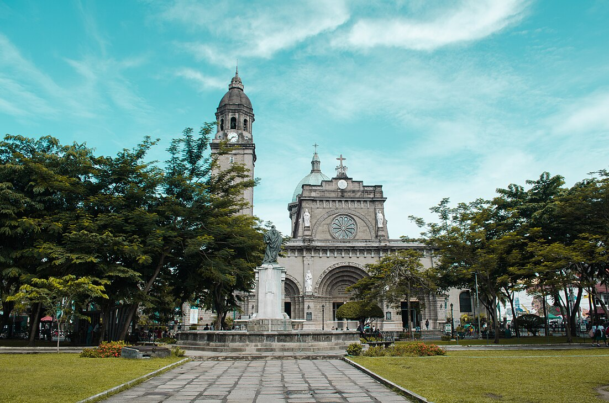
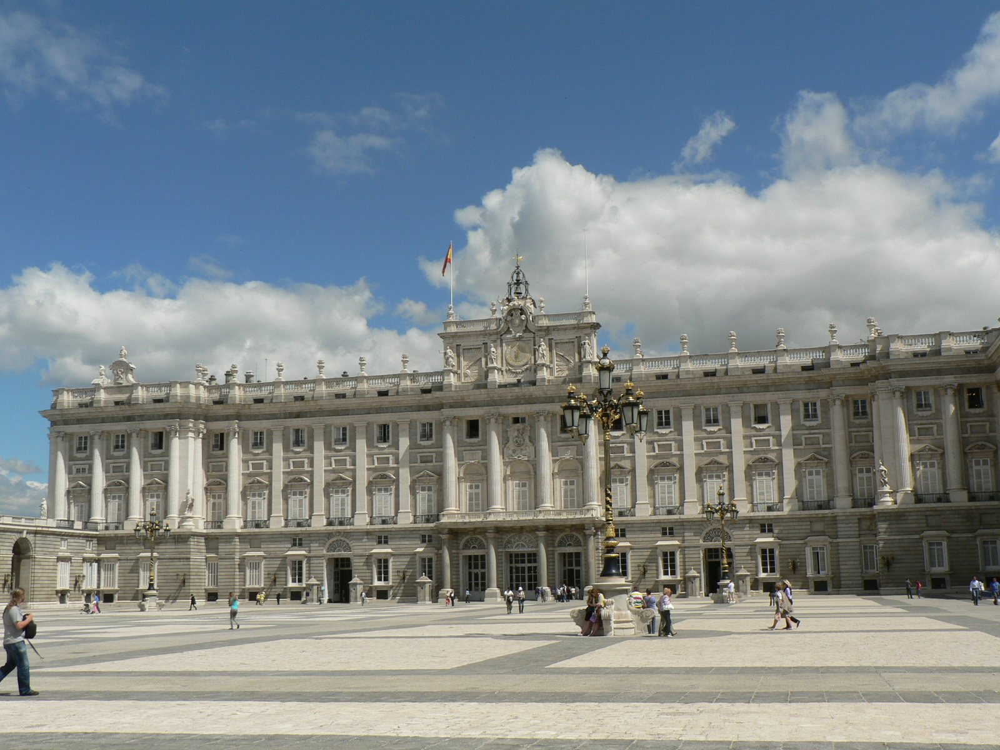
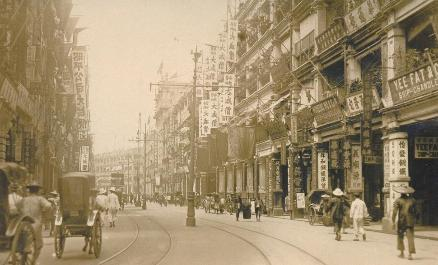

Start of Journey
Rizal's Journey: Key Locations
1

Calamba, Laguna
1861
Birthplace of José Rizal
2

Manila
1872-1882
Formal Education Period
3

Spain & Europe
1882-1887
Writing Period & Intellectual Development
4

Hong Kong
1891-1892
Medical Practice & Family Reunion
5

Dapitan
1892-1896
Exile & Community Service
6

Bagumbayan (Luneta)
December 30, 1896
Execution & Ultimate Sacrifice